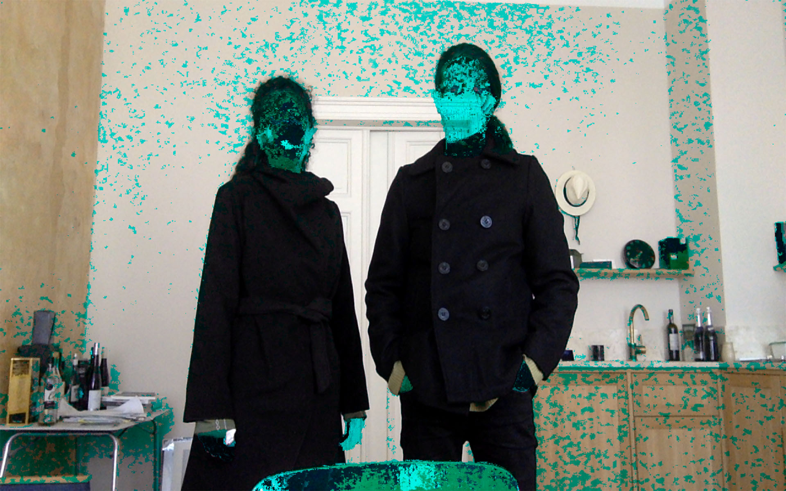
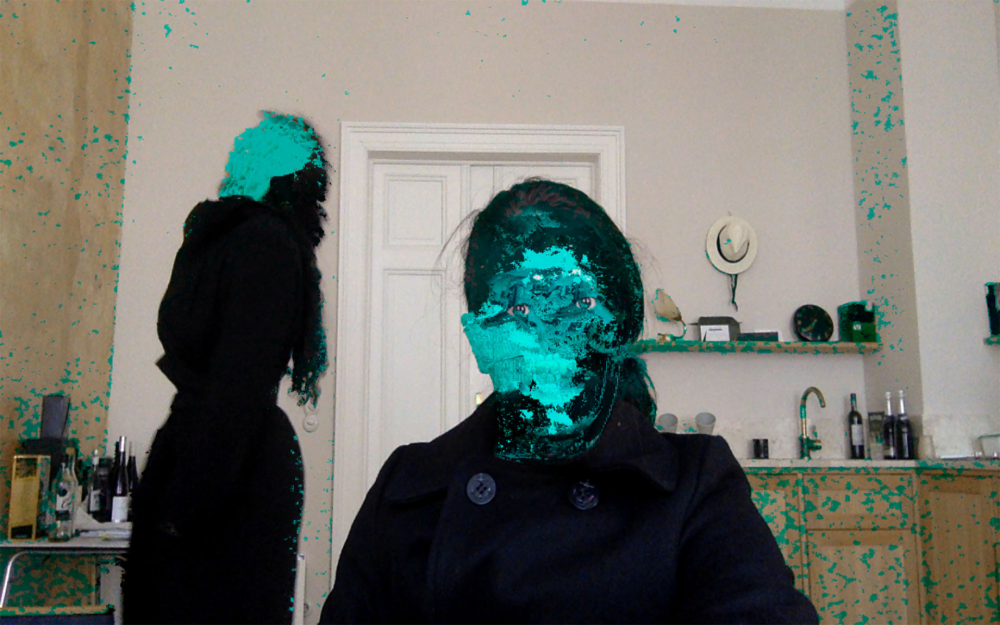

// PROJECT 12
C.R.E.E.S
C.R.E.E.S is designed as a program that substitutes the red of each pixel for its antagonistic value.
This work in particular has to do with the processes of radical and absolute changes; and in how these can distort the surrounding reality and pervert the objective perception of complex historical-social phenomena.
In the context of contemporary Cuba, red has been a color linked to patriotism and the revolutionary process. Under this logic, the substitution of this symbol for its antagonistic value constitutes the radical supplantation of one ideology by another.
I have built a system based on this substitution principle using computer vision and an immersive visualization system. The result of such construction is an alienating work that separates me from the reality that I perceive. As red is a fundamental value in the digital interpretation of human skin, this system completely distorts the people who I look at.
In my opinion confronting absolute ideologies with totalitarian positions is a mistake.
The work has gone through two parts. A first stage in which I programmed and tested the system as an immersive environment in architectural spaces where ideological antagonisms and the substitution of cultural policies had occurred. The present phase of the project has focused on the construction of a portable system that allows me to interact with the reality of the streets and film various results that I intend to compile in a film.

Reemplazá este texto con la descripción de esta imagen.

Reemplazá este texto con la descripción de esta imagen.
V1
V2